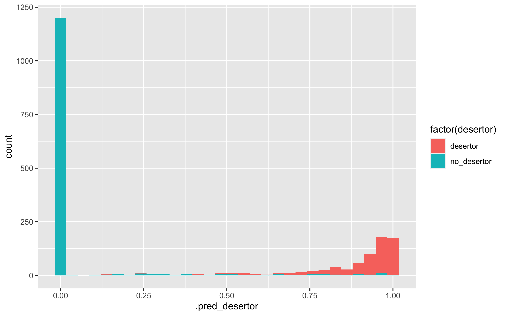
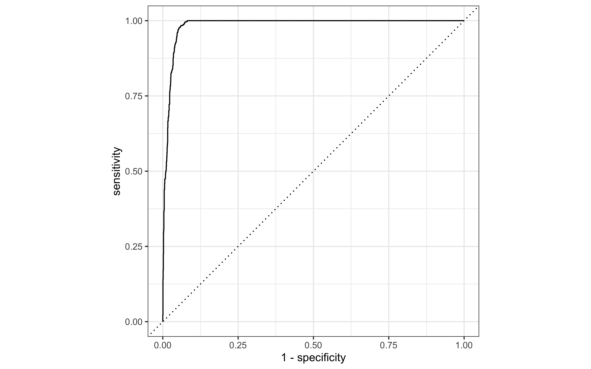

4 Preprocesamiento e ingenieria de entradas:
Usaremos una receta más simple (no necesariamente tenemos que poner interacciones, categorización de entradas, transformaciones no lineales):
receta <- recipe(desertor ~ edo +
muni +
sexo +
p5 +
p6 +
p7 +
p9_1 + p9_2 + p9_3 + p9_4 + p9_5 + p9_6 + p9_7 + p9_8 + p9_9 +p9_10 + p9_11 + p9_12 +
p10 +
p12_1 + p12_2 + p12_3 + p12_4 + p12_5 + p12_6 + p12_7 + p12_8 + p12_9 + p12_10 +
p14 +
p15 +
p16 +
p17 +
p18 +
p23_1 + p23_2 +
p25_1 + p25_2 + p25_3 + p25_4 + p25_5 + p25_6 + p25_7 + p25_8 + p25_9 + p25_10 + p25_11 + p25_12 + p25_13 + p25_14 + p25_15 + p25_16 + p25_17 +p25_18 + p25_19 + p25_20 + p25_21 + p25_22 + p25_23 +
p27 +
p39 +
p40_1 + p40_2 + p40_3 + p40_4 + p40_5 + p40_6 + p40_7 + p40_8 + p40_9 + p40_10 + p40_11 + p40_12 + p40_13 + p40_14 + p40_15 +
p41a + p41b + p41c + p41d + p41e + p41f+ p41g + p41h + p41i,
data = entrena) %>%
step_interact( ~ p12_1:p12_10)%>%
step_dummy(all_nominal_predictors()) %>%
step_zv(all_predictors()) #step_zv remove variables that contain only a single value.Dimensión de los datos:
prep(receta, entrena) %>% juice() %>% dim()## [1] 7882 555Empezamos con parámetros más o menos default
modelo_boosting <- boost_tree(learn_rate = 0.1, trees = 3000,
mtry = 5, tree_depth = 3, sample_size = 0.8) %>%
set_mode("classification") %>%
set_args(objective = "binary:logistic")
flujo <- workflow() %>% add_recipe(receta) %>% add_model(modelo_boosting)
flujo_fit <- fit(flujo, entrena)## [17:02:42] WARNING: amalgamation/../src/learner.cc:1115: Starting in XGBoost 1.3.0, the default evaluation metric used with the objective 'binary:logistic' was changed from 'error' to 'logloss'. Explicitly set eval_metric if you'd like to restore the old behavior.ajuste_xgboost <- flujo_fit %>% extract_fit_engine() %>% pluck("evaluation_log") %>%
as_tibble()
ggplot(ajuste_xgboost, aes(x=iter, y = training_logloss)) + geom_line()
valida <- testing(encuesta_part_val$splits[[1]])
preds_val <- predict(flujo_fit, valida, type = "prob") %>%
bind_cols(valida %>% select(desertor))mis_metricas <- metric_set(mn_log_loss, roc_auc)
mis_metricas(preds_val, truth = factor(desertor), .estimate = .pred_desertor, event_level = "first")## # A tibble: 2 × 3
## .metric .estimator .estimate
## <chr> <chr> <dbl>
## 1 mn_log_loss binary 0.116
## 2 roc_auc binary 0.987preds_entrena <- predict(flujo_fit, entrena, type = "prob") %>%
bind_cols(entrena %>% select(desertor))mis_metricas <- metric_set(mn_log_loss, roc_auc)
mis_metricas(preds_entrena, truth = factor(desertor), .estimate = .pred_desertor, event_level = "first")## # A tibble: 2 × 3
## .metric .estimator .estimate
## <chr> <chr> <dbl>
## 1 mn_log_loss binary 0.0754
## 2 roc_auc binary 0.996ggplot(preds_val, aes(x = .pred_desertor, fill = factor(desertor))) +
geom_histogram()
4.0.1 Preparar solución
La siguiente es la solución al problema que estamos planteando.
encuesta_test <- testing(encuesta_part_inicial)
preds_prueba_sol <- predict(flujo_fit, encuesta_test, type="prob") %>%
bind_cols(encuesta_test %>% select(desertor))
mis_metricas <- metric_set(mn_log_loss, roc_auc)
mis_metricas(preds_prueba_sol, truth = factor(desertor), .estimate = .pred_desertor, event_level = "first") ## # A tibble: 2 × 3
## .metric .estimator .estimate
## <chr> <chr> <dbl>
## 1 mn_log_loss binary 0.126
## 2 roc_auc binary 0.985Resultados:
- Esto modelo logra un score de \(0.125\)
- Una curva ROC de \(0.984\).
roc_graf <- roc_curve(preds_prueba_sol, truth = factor(desertor), .pred_desertor,event_level = "first")
autoplot(roc_graf)